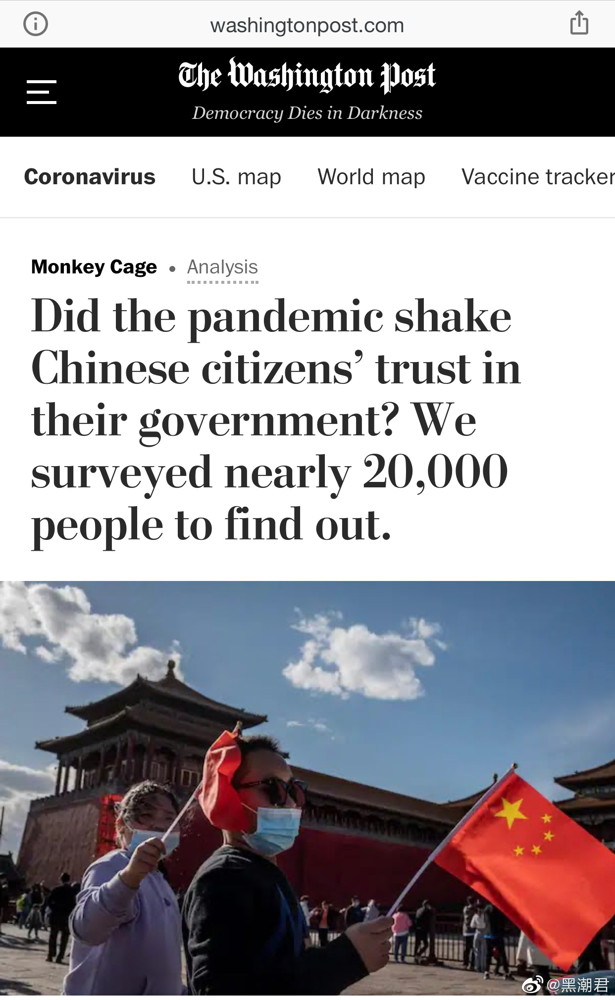
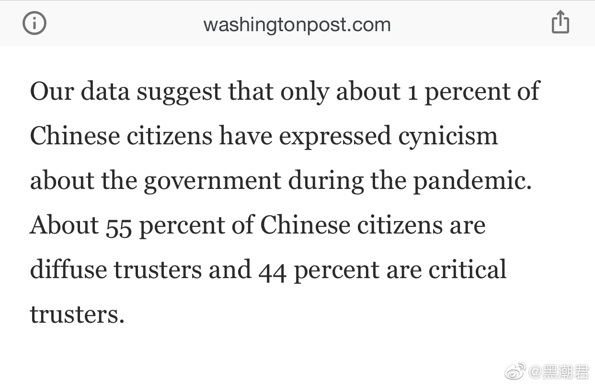

要是调查出来个100%信任，才叫恐怖。//@msmarple:有意思的是这1%大多都一口咬定自己是“开启民智”，是“为民请命”。他们心里总想着人民，想着弱势群体，如果他们不是口是心非，我觉得他们就是标准的共产党员。 //@没有人比我更懂杭之冯玥:全靠同行陪衬。//@于三羊鲜声: 转发微博
//@没有人比我更懂杭之冯玥:全靠同行陪衬。//@于三羊鲜声: 转发微博
@黑潮君:
华盛顿邮报说，他们通过跟中国17位中国学者合作，从53所大学招募了600多名学生志愿者，在中国31个省级行政区回收了19816份电子问卷，用以调查新冠肺炎疫情是否对中国政府的公信力造成了影响。
报道表示，在2018年的调查中，95%的中国公民信任中央政府，但仅有69%的人同样信任地方政府，而在华盛顿邮报这次调查中，98％中国公民信任中央政府， 91％表示他们完全信任或完全信任乡镇政府。 县级信任度升至93％，市级信任度升至94％，省级信任度升至95％。 这些数字表明，中国公民已经越来越信任各级政府。
此外，在新冠肺炎疫情大流行期间，仅有1%的人对中国政府表示冷嘲热讽，另外99%则是不同程度地信任政府。
报道表示，在2018年的调查中，95%的中国公民信任中央政府，但仅有69%的人同样信任地方政府，而在华盛顿邮报这次调查中，98％中国公民信任中央政府， 91％表示他们完全信任或完全信任乡镇政府。 县级信任度升至93％，市级信任度升至94％，省级信任度升至95％。 这些数字表明，中国公民已经越来越信任各级政府。
此外，在新冠肺炎疫情大流行期间，仅有1%的人对中国政府表示冷嘲热讽，另外99%则是不同程度地信任政府。
- 
- 